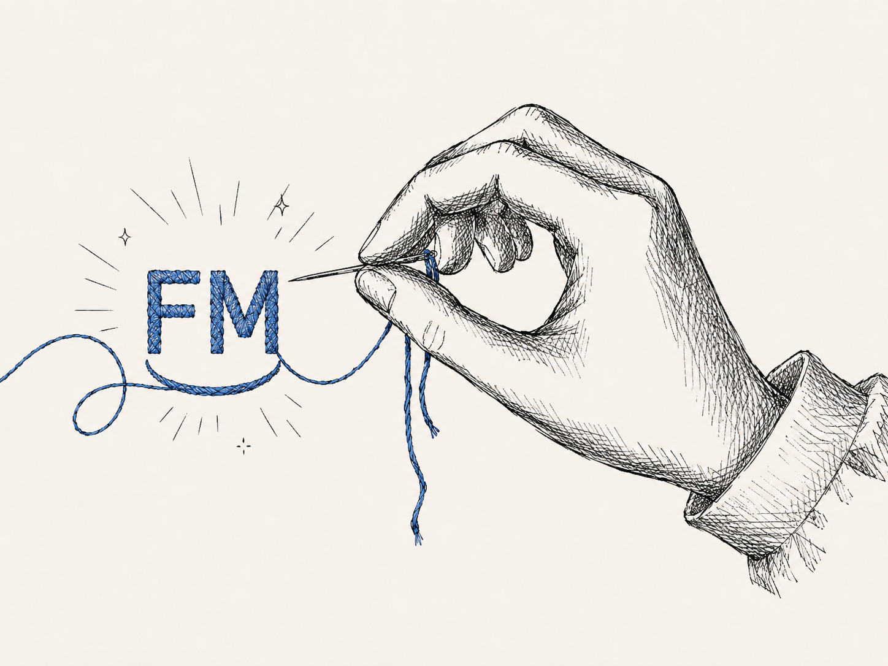
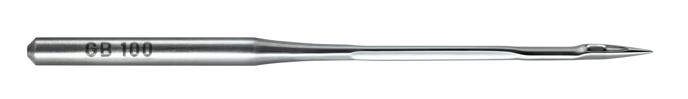
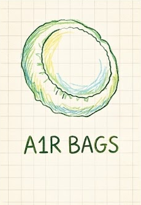
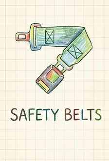
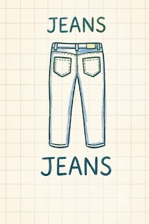
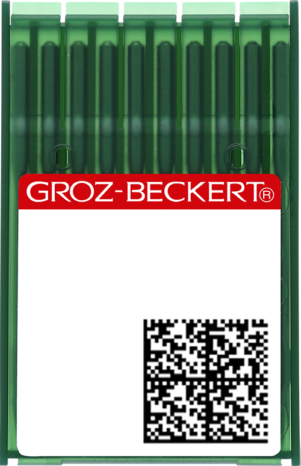

The right needle,
for every seam.
A needle is the smallest part of a sewing machine and the one that decides seam quality. FM stocks Groz-Beckert systems across every machine category we carry, and here's what's on the shelf.

Keeps its cool
at full speed.
At high sewing speeds, or on dense, multi-layer materials, friction can heat a standard needle enough to melt thread and scorch the stitch hole. The Litespeed™ needle's patented blade geometry shrinks the contact area with the fabric, cutting friction, and the heat, at the source.
- Reduced friction and heat from a smaller contact area with the material
- Gentle treatment of thread and material
- Fewer thread breaks when the machine stops
- Less downtime, higher process reliability

Bartack applications, attaching labels, dense materials, multiple layers, and high sewing speeds all push a standard needle toward its limit.



Eight systems. Every machine we sell.
Grouped by the machines they run in, jump to the category that matches what's on your floor.
For AMH2, A-series and heavy-duty lockstitch heads

The standard needle system for lockstitch machines, the same 134-family needle running across FM's Jack lockstitch range, from everyday sewing to denim.

A heavier-duty lockstitch and bartack needle, built for template machines, bartacking and reinforced stitching where DBx1 isn't enough.
For C7, C5C and the rest of the C-series

The standard overlock needle system, paired with Jack's C-series machines for everyday overlocking through to denim-specific seams.
For K7, W5E and multi-needle waistbanding heads

Interlock and coverstitch needle system for hemming, waistbanding and cover seams.

Built for elastic attaching and multi-needle waistbanding heads like the JK-8009 series.

A finer interlock and cover-stitch needle for lighter fabrics, knits and intimate apparel.
For bartacking and buttonholing heads

Reinforcement-stitch needle for bartack and buttonholing machines, built to punch through stress points on pants, denim and bags.

A dedicated bartack needle for heavy reinforcement stitching on straps, loops and load-bearing seams.
What the point codes mean
The letters after a needle system name describe the shape of its point. The right one protects the fabric and the seam.
Sharp round point. For blind stitch and very straight lockstitch seams in fine fabrics.
Regular round point. The standard for lockstitch, woven fabrics and coated materials.
Round point, slightly rounded tip. Standard for chainstitch and embroidery.
Light ball point. For knitted fabrics and woven cotton or synthetic materials.
Medium ball point. For elastic or coarse fabrics and materials with rubber content.
Special ball point for warp-knitted fabrics with a high elastomer content.